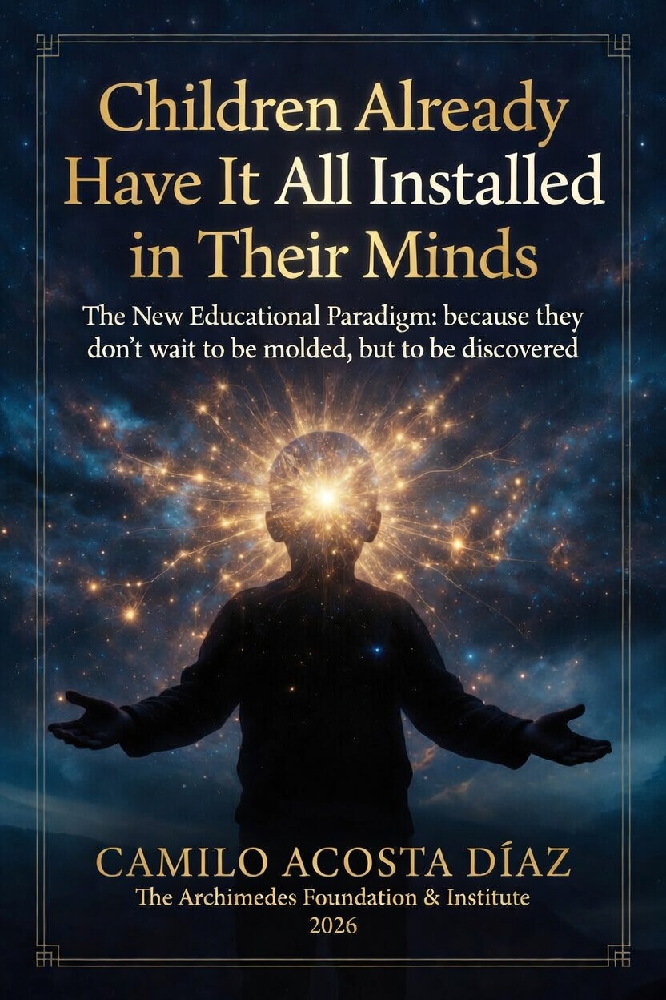

The Archimedes Foundation & Institute operates at the intersection of rigorous pedagogical research and social intervention. We believe that the global educational crisis is not a lack of information, but a failure to cultivate the architecture of character and the volitional process of the individual.
The Archimedes Foundation & Institute exists to advance a single, fundamental truth: cognitive capacity is not built from zero, but discovered through precise activation.
Rooted in seventeen years of intensive pedagogical practice within one of the world's most rigorous music education systems, and refined through disciplined academic research, the Foundation promotes the principles of Installed Cognitive Architecture (ICA) — a framework structured around the Sacred Triad of Brain, Soul, and Spirit.
We do not seek reform for reform's sake. We pursue uncompromising precision in understanding how children actually learn, how teachers truly guide, and how institutions can honor the pre-existing organization of the human mind.
Our work is simultaneously philosophical, pedagogical, and institutional. We publish original research. We train educators with rigor. We design models that respect the innate architecture every child already carries — because the first and highest act of education is recognition, never construction.
The mission of the Archimedes Foundation & Institute is to bridge the rigorous dissemination of Installed Cognitive Architecture theory with the systematic pursuit of effective, evidence-based educational solutions.
We do not merely theorize. We translate the principles of the Sacred Triad — Brain, Soul, and Spirit — into measurable pedagogical practices that honor the innate cognitive architecture already present in every child. Through continuous research, longitudinal observation, and real-world implementation, we validate and refine our framework with empirical evidence.
Our commitment is dual and inseparable: to deepen the global understanding of how human intelligence truly unfolds, and to develop scalable, precise interventions that restore the dignity and effectiveness of education. We work with educators, schools, and institutions that demand more than trends — they demand results rooted in evidence, philosophical clarity, and respect for the child's pre-existing potential.
Recognition without evidence is poetry. Evidence without recognition is mechanics. At Archimedes, we unite both.

The New Educational Paradigm: because they don't wait to be molded, but to be discovered
This book presents the complete theory of Installed Cognitive Architecture (ICA): five precise principles structured around the Sacred Triad of Brain (logic), Soul (empathy), and Spirit (transcendence). These principles demonstrate that true learning is not an act of construction, but of activation — the awakening of cognitive capacities already installed within every child.
Drawing on seventeen years of direct leadership in one of the world's most demanding music education systems, Camilo Acosta Díaz proposes a fundamental pedagogical shift: from the industrial model of molding students to the dignified practice of discovering what they already possess.
Integrating advances in neuroscience, classical philosophy, and institutional design, the work offers practical and theoretical frameworks firmly grounded in the recognition of pre-installed human potential. It challenges the prevailing educational paradigm and lays the foundation for a new era in which education ceases to impose and begins to reveal.
Children Already Have It All Installed in Their Minds is both a diagnosis of the current crisis and a clear architectural blueprint for the rescue of education.
Published by The Archimedes Foundation & Institute • 2026
Camilo Acosta Díaz is a Venezuelan violinist, educator, and author.
He joined the Simón Bolívar Symphony Orchestra in 1981 following a public audition before Maestro José Antonio Abreu. For seventeen years, he served as Director of the National Violin Academy within El Sistema, Venezuela—one of the most demanding music education programs in the world. He later held the position of Guest Professor at the Universidad de Guadalajara for two years.
In 2022, he founded The Archimedes Foundation & Institute in Guadalajara, México, dedicating his work to the development and dissemination of Installed Cognitive Architecture theory—a pedagogical framework built on the principle that children do not need to be constructed, but activated.
His academic pensum, designed in 1995, and the ECOS Congress, organized in 2022, reflect decades of precision in educational design. He is the author of Children Already Have It All Installed in Their Minds (2026).
For inquiries regarding institutional collaboration, speaking engagements, or academic correspondence:
fundacion@institutoarquimedes.org
The Archimedes Foundation & Institute
Guadalajara, Jalisco, México